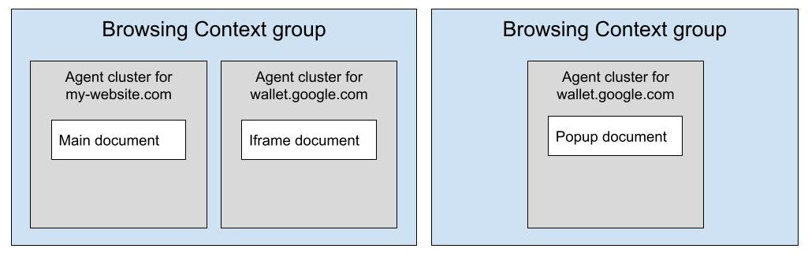
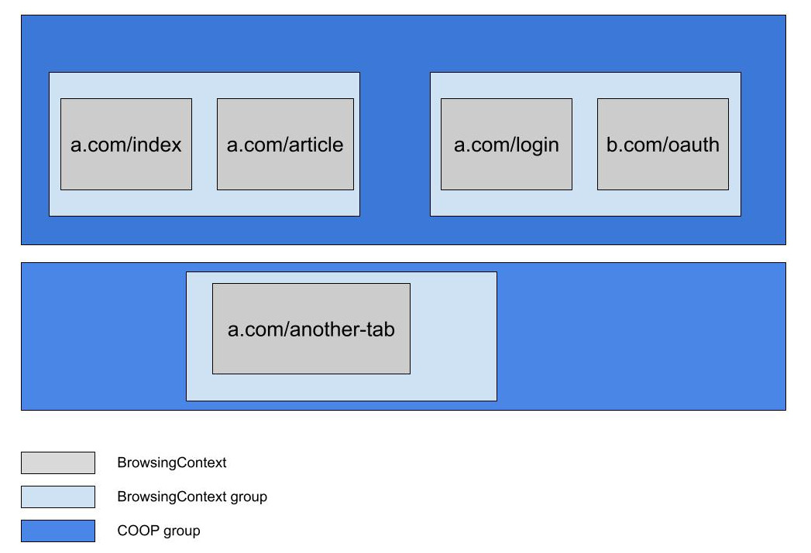

1. Introduction
This section is not normative.
1.1. Recommended readings
-
The [Spectre] vulnerability.
-
The Cross-Origin-Opener-Policy (COOP) section of the HTML spec.
-
How and why Cross-Origin-Opener-Policy (COOP) and Cross-Origin-Embedder-Policy (COEP) are granting the crossOriginIsolated capability. See [WhyCoopCoep].
2. A problem
This section is not normative.
For pages to get crossOriginIsolated today, we require that COOP: same-origin(coop-same-origin be set. This effectively prevents any interaction with third-party popups. This is problematic for an important variety of use cases, below are a few real world examples:
-
gmail.com wants to do memory measurement to diagnose performance. Some emails contain meet.com iframes which open a meeting when interacted with.
-
zoom.com wants to use sharedArrayBuffers to reduce the copying of media data. It needs to support being opened from third-party apps, via an SDK.
-
perfetto.dev, a trace visualization app, would like to use a more accurate performance.now() to improve performance. They use third-party popups to display traces without having them sent to their server.
-
construct.com, an online game engine needs javascript threading for performance, but uses another domain for renderer game-preview popups.
All of the aforementioned APIs are gated behind the crossOriginIsolated capability. This means that all of these websites cannot access them without breaking their cross-origin popup flows.
These restrictions are due to the [Spectre] vulnerability. Because of Spectre, OS processes are now the only strong security boundary a browser can enforce. crossOriginIsolated unlocks powerful APIs that make Spectre vulnerabilities easier to exploit. So the browser need to be able to put crossOriginIsolated pages in their own process based on top-level origin. To be able to honor that, Cross-Origin-Opener-Policy (COOP) relies on BrowsingContext group (browsing-context-group) switches.
A BrowsingContext (roughly a frame) belongs to a BrowsingContext group. All documents presented in a BrowsingContext can communicate with other documents presented in BrowsingContexts in the same BrowsingContext group via javascript. Additionally, the BrowsingContext group holds a map of origins to Agent Clusters. All same-origin documents in the same BrowsingContext group are in the same Agent Cluster. They have synchronous scripting access to each other. They need to be in the same process.
If a browser does not support SiteIsolation, then all iframes have to be in the process of the top-level frame. When any frame on the page opens a popup, the popup also has to be put in the same process. This is because it could contain frames that same-origin with frames on its opener page. These frames belong to the same-agent cluster, and must be located in the same process to guarantee synchronous DOM interactions. In practice, without SiteIsolation, all pages in a Browsing context group resides in the same process, like in the example below:

With COOP same-origin, we put the popup in a different BrowsingContext group. Putting two documents in BrowsingContexts not belonging to the same BrowsingContext group ensures they are not in the same Agent Cluster, therefore that they do not need to be in the same process. This allows one of the documents to safely enable crossOriginIsolation, since the browser is using two different processes to isolate them.

However, documents in different browsing context groups cannot communicate with one other. So the payment flow in this example is broken. COOP restrict-properties aims to preserve some of the communication while ensuring that documents can be properly process isolated, even without SiteIsolation.
3. Explainer
This section is not normative.
3.1. The COOP: restrict-properties proposal
Instead of completely removing scripting capabilities between two pages, we would like to only restrict synchronous access. This is what requires pages to be in the same process. Making sure that two pages can never script each other synchronously ensures that they can safely be put in different processes.
The basic COOP: restrict-properties idea would be to use a single BrowsingContext group, but to increase the keying of Agent Cluster. We would have multiple same-origin documents not be able to synchronously script each other, despite being able to reach each other’s Window object.
Instead of increasing Agent Cluster keying, we introduce a new superset of BrowsingContext group, the CrossOriginOpenerPolicy group. Within this new group, pages have asynchronous access to each other. This gives us the following multi-layer structure.

Putting pages in a different BrowsingContext group but same COOP BrowsingContext group would be done via a new COOP value, restrict-properties that would only allow access to asynchronous properties. This makes it possible to put the two pages in different processes, and to enable crossOriginIsolated on the first page, as long as it also sets COEP.
To reduce XS-leaks as much as possible, we reduce asynchronous across-BrowsingContext groups to a very limited set of properties: {window.closed and window.postMessage()}. This is based on metrics research that shows that the overwhelming majority of sites only uses these two properties when interacting with cross-origin popups. This prevents almost all WindowProxy XS-Leaks.
3.2. Fitting COOP: restrict-properties into current algorithm
The COOP algorithm works by comparing header values and origins to say compute whether or not we should use a new BrowsingContext group. This needs to be opened to an enum return value, containing the following possible outcomes:
-
Stay in the same BrowsingContext group.
-
Stay in the same COOP group, but change BrowsingContext group.
-
Change COOP BrowsingContext group.
Current COOP algorithm returns either 1. or 3. Using COOP: restrict-properties would yield 2., iff:
-
We are navigating between a page setting COOP: unsafe-none from/to a page setting COOP: restrict-properties.
-
We are navigating between two pages setting COOP: restrict-properties, but that have different origins.
-
We have a opened a fresh popup from a page that set COOP: same-origin-allow-popups to a page that sets COOP: restrict-properties.
3.3. Extra requirements for common use cases
We want COOP: restrict-properties to be as little intrusive as possible while providing strong guarantees. Imagine the following use case: an authentication provider uses a navigation flow to provide login with many different providers. We do not want one of them setting COOP: restrict-properties limiting the interactions between my-website.com and the provider.

In the above case, the navigation from auth-provider.com to google.auth.com triggers a BrowsingContext group swap, within the same COOP group. We want to make sure that the subsequent navigation from google.auth.com to auth-provider.com reuses the same BrowsingContext group as the initial auth-provider.com page, to reduce the impact of deploying COOP: restrict-properties. We call that the reversibility requirement of COOP: restrict-properties.
To be able to do that, the COOP group needs to hold a map of BrowsingContext groups, that they can reuse. This map is keyed by: {isCrossOriginIsolated, hasCoopRestrictProperties, top-level origin or null}. This makes sure that:
-
A crossOriginIsolated BrowsingContext group is never reused for another origin, nor for a page that does not set COEP.
-
A BrowsingContext group containing pages with COOP: restrict-properties is not reused for another origin.
-
All pages without COOP, within a COOP group, live in the same BrowsingContext group.
4. Alternatives considered
This section is not normative.
4.1. Extra-keying on Agent Clusters
Instead of introducing the context of COOP groups to the spec, we could have extended the Agent Cluster key in the following way - the agent cluster key is either:
-
a site
-
a tuple origin
-
a tuple containing an origin, a boolean (crossOriginIsolated) and another origin (top-level origin)
There is no web-observable behavior difference between this solution and the one proposed in this spec. We do believe that having the COOP group notion makes the spec easier to follow, which is why we’ve opted for it. It also matches the underlying implementation better.
4.2. COOP same-origin-allow-popups-plus-coep
It would be possible to extend Cross-Origin-Opener-Policy: same-origin-allow-popups to provide the same guarantees as Cross-Origin-Opener-Policy: restrict-properties in order to support crossOrignIsolation. However, this has a few drawbacks. First, this can only be done when a page also sets COEP. Otherwise, the compatibility risk on pages already deploying COOP same-origin-allow-popups is too high. Second, it would only allow openers of popups to be crossOriginIsolated, and not popups themselves. Finally, COOP restrict-properties provides an easy to deploy mitigation against most WindowProxy based XS-Leaks, that is valuable in itself even outside the crossOriginIsolation paradigm.
5. Tests
Status: https://wpt.fyi/results/html/cross-origin-opener-policy/tentative/restrict-properties
6. Specification
This section defines a monkey-patch over [HTML].
6.1. Cross-origin-opener-policies
In the cross-origin opener policies section, extend the possible cross-origin opener polic values:
This forces the creation of a new top-level browsing context for the document, unless its predecessor specified the same cross-origin opener policy and they are same origin. Unlike same-origin and same-origin-allow-popups, the newly created browsing context and its browsing context group will stay in the same coop group.
7. Security considerations
7.1. Same-origin policy
Our proposal creates an unprecedented possibility: that two same-origin documents can reach one another but not have full access to each other. We audited the spec to produce a list of all places with same-origin checks relying on the assumption of full access. Some points worthy of attention:
-
The location object is quite sensitive and many of its methods/members are same-origin only. It is purposefully excluded from the list of allowed attributes by restrict-properties. We do not think we should allow a normal page to navigate a crossOriginIsolated page.
-
For similar reasons name targeting does not work across pages with COOP: restrict-properties.
-
Javascript navigations are a big NO. They mean executing arbitrary javascript within the target frame. There should be no way to navigate a frame across the COOP: restrict-properties boundary given the restrictions above are put in place.
7.2. Cross-origin subframes opening popup
What happens when an iframe in a COOP page opens a popup? The initial empty
document created always inherits the origin of the iframe, while we would like COOP to be inherited from the top-level document. This can create dangerous
discrepencies where we end up with a crossOriginIsolated initial empty
document of an arbitrary origin.
For COOP: same-origin we solved this problem by setting no-opener on any
popup opened from an iframe that is cross-origin to its top-level document.
7.2.1. Requirements
For COOP: restrict-properties to work, we need:
-
To be able to work with cross-origin iframes opening popups. These are common in the flow we’re trying to address.
-
To use the standard COOP comparison rules for freshly opened popups on their first navigation. Currently we do not inherit COOP for fresh popups opened by cross-origin iframes. So it is always
unsafe-noneto X. This works for current COOP values:-
same-origin-allow-popupsbehaves likeunsafe-nonewith freshly opened popups. -
same-originopens such popups with no-opener. -
It does not work with COOP:
restrict-propertiesbecause we need to swap againstunsafe-none.
-
We do not currently inherit COOP because it would mix the origin, inherited from the iframe, with the COOP value, inherited from the top-level document.
!image By simply inheriting, we break COOP. In this example, everything lives in the same process, which should never be allowed.
{kind=link}
We use noopener because an initial empty documents from a different origin in the same browsing context group, if crossOriginIsolated, could read the top-level origin, bypassing the PermissionsPolicy that might have been set on the iframe.

By not using noopener, we’ve allowed the iframe to exploit crossOriginIsolated APIs, bypassing the PermissionsPolicy set by the embedder.
7.2.2. Solution
Our solution is to supplement the COOP structure with the origin that initially set it. This way we prevent the mix-up of origins and COOP value. The COOP origin is used exclusively by the COOP algorithm. Initial empty documents that do not have matching origin and COOP origin cannot use crossOriginIsolated APIs.

By supplementing COOP with the setting origin, we are able to correctly separate the two end pages in two distinct browsing context groups. The initial empty document still lives in the opener browsing context group but might not use CrossOriginIsolated APIs.
We also wanted to add some details about the crossOriginIsolated APIs restriction for pages with mismatched COOP origin and origin. Below are all the different inherited pieces of the puzzle:
COOP is inherited from the top-level opener browsing context. COEP gets passed to the initial empty document because the iframe set it. crossOriginIsolated permission is none because COOP origin and origin do not match.
In this example, we have documents with different top-level origins in a BrowsingContext group that is crossOriginIsolated. This was not initially possible, but we believe this is fine:
-
Anything that the iframe does is readable by a.com. This is fine because b.com agreed to that by setting COEP. The fresh popup is required to be in-process, and anything done in there can be read by a.com. A.com cannot get any extra information, because the top-level frame behaves like the iframe. It has COEP so it cannot do new embedding, it has the same origin so it cannot do extra fetches, etc.
-
In the other direction, b.com can read a.com if the Permissions-Policy is delegated to the iframe. Permissions-Policy is not inherited. For this reason we explicitely disable crossOriginIsolated permission on all freshly opened popups, as it would otherwise default to
allow. -
COOP invariants about top-level origins become invariants about top-level COOP origins. The only case where a page can have a COOP origin not equal to its actual origin is the initial empty document.
Finally, a note about the following situation:

COEP gets inherited to the popup although only the iframe set it and its top-level document did not. The iframe is NOT crossOriginIsolated.
We’ve simplified the COOP value in the drawings. In reality it is augmented with COEP when it is received from the network, and used alone in the COOP algorithm. In the above picture it still works as intended, because we’re inheriting COOP: "restrict-properties" and not "restrict-properties+COEP".
7.2.3. Origin and CSP
Because we’re recording the origin along the COOP value, we need to decide what to do with sandboxing, which can make the origin opaque. The current spec mentions that we first compute the sandboxing flags, both inherited and set via CSP, and then if COOP is also set we go to an error page. However, COOP is enforced but CSP is not, creating a discrepency.For COOP restrict-properties, we believe we should compute sandbox flags at each redirect step, and use the potentially opaque origin to make COOP switch decisions. Unlike regular COOP, having both sandbox flags and COOP restrict-properties should not result in an error page. Instead, both sandbox flags and COOP restrict-properties will apply.
7.3. Window.name leakage
When we navigate to a COOP: restrict-properties page and then to a COOP: unsafe-none page, we need to make sure no state remains from the previous context, to limit XS-Leaks. Window.name can be set by a crossOriginIsolated page and it could expose information to the next site.
In this example all the documents with origin A.com can set and target the window.name property. It is in a different context from the B.com’s page, so we stash the name when navigating. B.com free to set its own name and use it in its context. When we navigate back to A.com we reuse the stashed name.
7.3.1. Window name leak
name is a same-origin property of the Window object. While it cannot ever be
set or read directly by windows in other browsing context groups, it has the
particularity of being sticky, even during cross-browsing context group
navigations.

Because the property is linked to the window and not the document, this can be a cross-site leak vector. In this example, the original A.com page, a potentially crossOriginIsolated page was able to read the window’s name.
It is commonly used for named targetting, which is specifying a string as the
"target" of an anchor tag, a window.open() parameter, etc. to navigate that
target, or retrieve a window handle to it. This also has its own problems,
because we do not want a regular page to be able to navigate a
crossOriginIsolated page ever. Named targeting resulting in navigations are
therefore completely prohibited between browsing context groups. Window
retrieval is similarly not permitted because it would be an XS Leak vector, and
many queries could be used to guess a window’s name.
After a same-origin navigation of the opener, it tries to retrieve a handle to the popup previously opened.
7.3.2. Short term mitigation
A simple solution to this problem is to clear the window’s name during a navigation to a different browsing context group in the same COOP group.

In that case, the popup name is cleared when navigating to B.com. When it navigates back to A.com, the name is cleared again.
This interacts with named targetting, as the name is cleared, targetting cannot resolve between the main page and the popup after it is navigated. The popup has to manually update its name to something known by the main page.
7.3.3. Long term mitigation
We would prefer a solution that does not interact with named targetting, and makes it easier and more robust for web developers to use named targeting with multiple browsing context groups. An option would be to move from a single name model to a multiple name model. In that case, each browsing context would have a name per browsing context group that wants to refer to it.
Instead of clearing window.name, we link it to the browsing context group that set it. Named targeting resolves if a page from A.com’s browsing context group targets the popup using 'myname'. B.com’s browsing context group on the other hand still sees the name as empty. After it sets a name of its own, it can be used in B.com’s browsing context without overriding A.com’s set name.
With this solution, we preserve legitimate use cases. We still need to block named targetting which result in a navigation in a window in another browsing context group. Note that this mechanism could also be used for browsing context groups swaps to another COOP group, and to help restore names on back navigation for example.